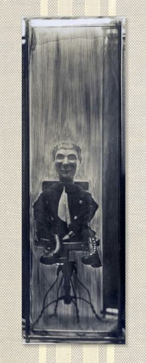

poetry and old-time music
 In my poetry life, I write poems, give readings, teach writing classes and workshops, and encourage poetry everywhere. I have three books, The Cupboard Artist (Floating Bridge Press, 2012), Now (Bear Star Press 2007), and By a Thread (Van West & Company, 2000), and my work appears in many journals and magazines.
In my poetry life, I write poems, give readings, teach writing classes and workshops, and encourage poetry everywhere. I have three books, The Cupboard Artist (Floating Bridge Press, 2012), Now (Bear Star Press 2007), and By a Thread (Van West & Company, 2000), and my work appears in many journals and magazines.
 In my music life, I play old-time banjo, fiddle and guitar. I give banjo lessons, play for dances, concerts, and in living rooms, and love to get together with friends who play. My recordings are Instead of a Pony, and Goose and Gander.
In my music life, I play old-time banjo, fiddle and guitar. I give banjo lessons, play for dances, concerts, and in living rooms, and love to get together with friends who play. My recordings are Instead of a Pony, and Goose and Gander.
news
- New in 2015! Now offering banjo lessons at Dusty Strings Music School in Fremont as well as in my living room. Call or visit Dusty Strings to find out about lessons there. Click here for information about my lessons and teaching philosophy.
- New poems out in the Winter 2014-15 issue of Crab Creek Review!
- Finally it's here, my new book! Exercises to Free the Tongue: poems and text by Molly Tenenbaum, artist's book by Ellen Ziegler, printing and binding by Paper Hammer. Illuminated with historic images and ephemera from Molly’s grandparents, ventriloquists on the vaudeville circuit in the early 1900s, this book of poems plays with ventriloquial metaphors of voice and breath. A long time in the works, this is a book to celebrate.
The artist's book is printed in a limited edition of 20 copies; a less limited spiral-bound edition is also available, and you can even buy it at the store. 5” x 13”, 42 pages. Click here to see more poems and pages from the book.
- November 5, 2014: Book Launch Party for Exercises to Free the Tongue, a limited-edition artist book of poems about my grandparents' lives as ventriloquists on the vaudeville stage in the early 1900s. 7pm at Richard Hugo House.
- Read my poem "This Poem Needs Garlic" in the new issue of Tinderbox Poetry.
- New poems in the Summer/Fall 2014 issue of Poetry Northwest!
- April 28, 2014: The collaborative book I'm working on about my family's history with ventriloquism is featured today on the Best American Poetry Blog, in an interview with Martha Silano.
- Check out my poem, "Some Words..." in the Fall 2013 issue of Ecotone.
- New poem of mine in the Fall 2013 issue of The Southern Humanities Review!
- The 30th Anniversary edition of the Crab Creek Review is out. I'm proud to be included.
- Check out this wonderful new anthology, Alive at the Center: Contemporary Poems from the Pacific Northwest! Read my poem, "Bloomery," which I'm honored is included.
- Read this review of my book, The Cupboard Artist.
- Climb "The Apple Ladder," my poem in the The Far Field, our Washington State Poet Laureate's blog of Washington State Poets and Poetry.
- Read my poem "Afternoon Off" in Poetry Northwest.
- Fire on Her Tongue, e-anthology of contemporary poems by women, is available from Two Sylvias Press! Contains poems not only by me, but also by Kim Addonizio, Dorianne Laux, Martha Silano, Patricia Smith, Nance Van Winkel, and many other fine poets. I'm thrilled that my poem "The Pillows" is included!
- And how about this incredible anthology of contemporary persona poems, A Face to Meet the Faces? In it you'll find impersonations of Icarus, Diana Ross, Robert Oppenheimer, and many others, including my own, of Julia Child, inspired by her kitchen at the Smithsonian.
- Check out my poem "My New Library," in issue #9 of Anti-, a journal of contrarian poems.
- Read three insomniac poems in Fringe magazine.
- Look, my poem "I Live in a Yellow Ice Cream Truck" has prompted an artistic response from the magnificently creative Anna Lena Phillips!
 My recent banjo CD, Goose and Gander features me on banjo and vocals, and my brother Dan Tenenbaum on guitar. Here's "Bowling Green":
My recent banjo CD, Goose and Gander features me on banjo and vocals, and my brother Dan Tenenbaum on guitar. Here's "Bowling Green":
- Praise for Goose and Gander from Bill Martin's weekly Portland newsletter: "Molly Tenenbaum's "Goose
and Gander" is another superb channeling. In particular, "Old Kimball" makes my socks roll up and down in a terrible frenzy." "...fresh and alive, brilliantly played and innovative within the style. It takes a high degree of artistry and discipline to express yourself within a style of music and not mutilate it."